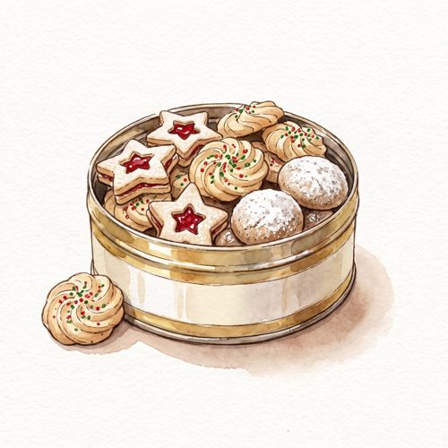
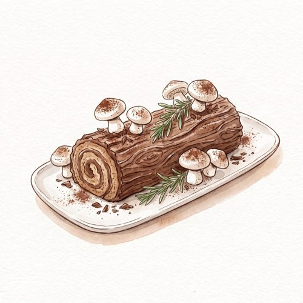
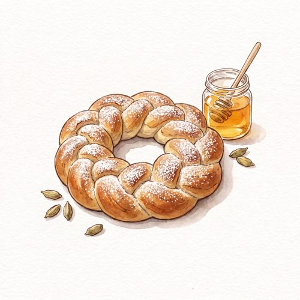
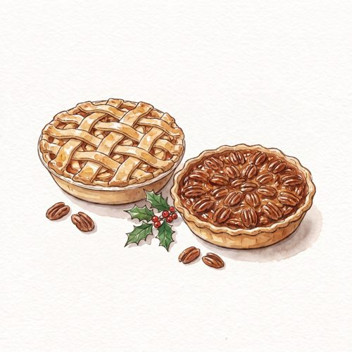
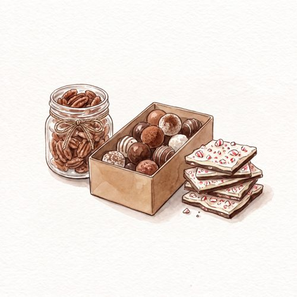

The Holiday Sketchbook
40 Festive Bakes, Weighed and Drawn
Forty festive bakes. One scale. No guesswork.
From Linzer cookies and saffron buns to sticky toffee pudding, pecan pie and chocolate truffles, this sketchbook-style collection gathers forty bakes for the whole holiday season: the cookie tin, festive cakes, holiday breads, pies and tarts, and edible gifts to wrap and share.
Every recipe is written in grams and comes with the numbers that matter at a glance: yield, pan size, oven temperature, bake time and rest time, each beside a hand-drawn watercolor illustration.
Inside: a make-ahead planner, a gifting and storing guide, a troubleshooting page, and room for your own family recipes.
Inside the book

The Cookie Tin

Festive Cakes

Holiday Breads

Pies, Tarts & Puddings
